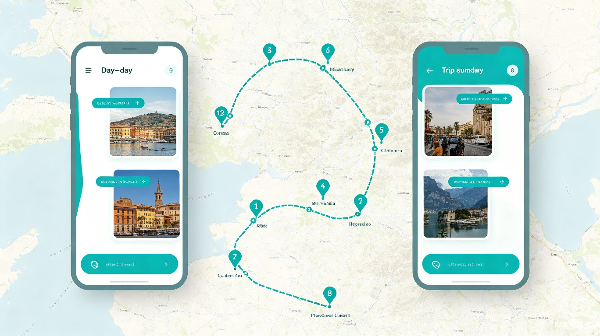
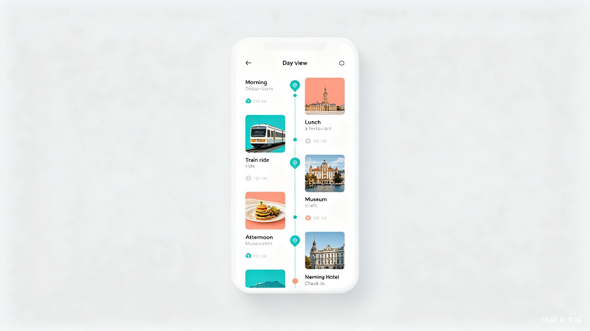
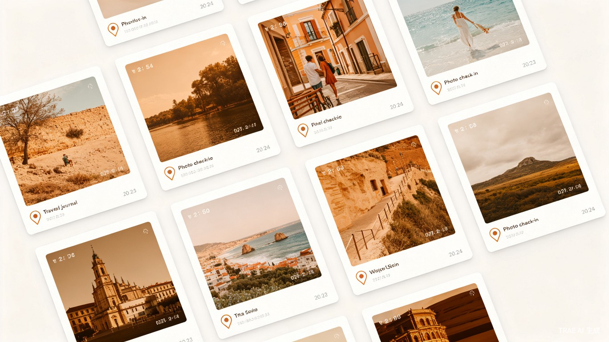
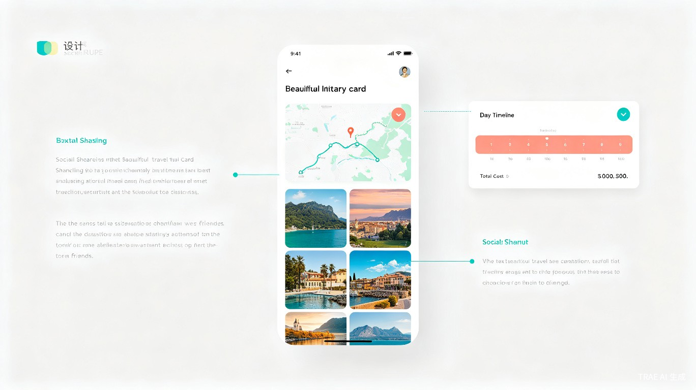

01创意概述
旅游助手是一款面向旅行爱好者的可视化行程辅助工具。它不替你做决定，而是把你已经计划好的行程，通过地图+时间轴的方式清晰展示出来，让原本枯燥的文字行程变得直观可读。
核心功能
可视化地图行程
用户手动录入景点、酒店、餐厅位置，在地图上直观展示每日行程路线和空间关系
时间轴展示
按用户设定的时间顺序排列行程，自动计算路程距离，帮助用户判断安排是否合理
轨迹打卡拍照
记录旅行轨迹，在每个打卡点拍照留念，按行程自动生成旅行日记
费用记录
用户手动录入交通、住宿、门票、餐饮费用，让旅行预算清晰可见
图文分享
随时将行程计划或旅行记录生成精美图文卡片，分享给同行伙伴
预订信息录入
手动录入火车票、机票、酒店和门票的预订信息，集中管理不遗漏
02产品界面展示
以下是旅游助手 App 的核心界面设计，展示了从行程规划到分享的全流程体验。





03用户旅程
从计划到回忆，旅游助手作为辅助工具陪伴用户的完整旅行生命周期。
旅行前 · 录入与可视化
用户将自己查好的行程手动录入系统：添加景点、酒店、餐厅的位置和时间，录入已预订的交通和住宿信息。App 自动在地图上展示路线，在时间轴上排列行程，让用户一眼看出安排是否合理。
计划确认 · 分享给同伴
行程录入完成后，一键生成精美的图文行程卡片，包含地图路线、每日安排和费用明细，方便分享给同行伙伴共同确认。
旅途中 · 查看与打卡
根据当前位置查看当日行程，导航到下一站。到达景点后打卡拍照，照片自动关联到对应行程节点。
旅行后 · 回顾与分享
生成带地图轨迹和打卡照片的完整旅行记录，随时回顾或分享给朋友。
04数据洞察
基于用户调研和市场分析，我们发现了旅行规划领域的核心痛点和产品机会。
05技术方案
旅游助手采用现代化的技术架构，确保流畅的用户体验和可靠的性能表现。
前端技术栈
- React Native — 跨平台移动开发，一套代码同时支持 iOS 和 Android
- Mapbox GL — 高性能地图渲染，支持自定义样式和离线地图包
- Reanimated 2 — 流畅的动画交互体验
- React Navigation — 原生级别的页面导航体验
后端技术栈
- Node.js + Express — 高性能 API 服务
- PostgreSQL + PostGIS — 地理空间数据存储与查询
- Redis — 缓存热点数据和用户会话
- AWS S3 — 图片和行程数据云存储
数据说明
- 行程数据 — 完全由用户手动录入，系统仅做可视化展示
- 地图数据 — 调用第三方地图服务（如 Mapbox/高德）进行渲染
- 隐私保护 — 用户行程数据仅存储在本地或用户授权的云端
核心能力
- 地理可视化 — 将用户录入的行程数据渲染为地图路线和时间轴
- 路程计算 — 自动计算景点之间的距离和预计通行时间
- 图文生成 — 将行程数据自动排版为精美的分享卡片
06发展规划
第一阶段（1-3个月）· MVP 验证
完成核心功能开发：行程手动录入、地图可视化展示、时间轴排列、基础分享功能。邀请种子用户内测验证可视化体验。
第二阶段（3-6个月）· 产品迭代
上线打卡拍照、费用记录、预订信息录入、图文分享卡片优化。持续优化地图渲染性能和交互体验。
第三阶段（6-12个月）· 功能完善
支持多人协作编辑同一行程、离线地图查看、导出 PDF 行程单。拓展多语言支持。
第四阶段（12个月+）· 生态建设
开放行程模板分享社区，用户可分享自己设计的行程模板供他人参考使用。